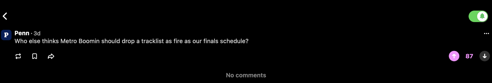

Prompt: Generate an image of ChatGPT writing a tweet
ChatGPT is cool and all, but can it be trendy?
If you have ever used a LLM such as ChatGPT 3.5, 4.0, or any other for whatever task (especially to write last-minute essays due 23:59), you probably agree with me: LLMs are AWESOME!
They can do basically everything: compute the multivariable integrals, write college-level essays, generate images, and the list goes on. However, one thing that came across my mind while thinking about LLM’s capabilities is, “Up to what degree can they simulate human behavior, especially in terms of communication?”
Turing Test… on Sidechat!
“In case you do not know who Alan Turing, let ChatGPT give you a brief explanation:
Alan Turing was a pioneering British mathematician, logician, and cryptanalyst who played a crucial role in the development of theoretical computer science and artificial intelligence. Born on June 23, 1912, in London, Turing is perhaps best known for his work during World War II at Bletchley Park, where he was instrumental in breaking the German Enigma code. This achievement is considered to have significantly shortened the war and saved countless lives.
Turing’s most famous theoretical contribution is the concept of the Turing machine, a hypothetical device that he proposed in 1936. This machine was intended to formalize the concept of computation and algorithm execution. The Turing machine is a fundamental model of a general-purpose computer, and Turing’s work laid the groundwork for the modern understanding of algorithms and computing.
In addition to his contributions to computing and cryptography, Turing proposed the Turing Test in 1950 as a measure of a machine’s ability to exhibit intelligent behavior indistinguishable from that of a human. This test remains a foundational idea in discussions of artificial intelligence.”
And it is this last paragraph that interests us the most for this specific article. As ChatGPT greatly expressed, the Turing Test is fundamentally a test, which was initially proposed as theoretical, that had as its primary goal to evaluate a machine’s skill to replicate human behavior, and this is how it is structured.
“The Turing Test, proposed by Alan Turing in 1950, is designed to assess a machine’s ability to exhibit intelligent behavior that is indistinguishable from that of a human. The test is structured as a form of the”imitation game,” which Turing described in his seminal paper titled “Computing Machinery and Intelligence.” Here’s how the Turing Test is typically structured:
Participants The test involves three participants:
A human judge - This person interacts with both a human and a machine and attempts to determine which is which based solely on their responses. A machine - The machine attempts to imitate human responses. A human foil - This person tries to help the judge by providing genuinely human responses. Communication The communication between the judge and the other two participants is typically conducted through a computer interface to ensure that the judge cannot derive clues from the voice, handwriting, or physical appearance of the human or the machine. This setup allows the focus to remain strictly on the linguistic capabilities of the participants.
Process The judge engages in a natural language conversation with both the machine and the human participant without knowing which is which. The conversations are usually text-based to prevent the judge from hearing a voice that could identify the human or machine. Each participant (the machine and the human foil) tries to convince the judge of their humanity. Objective The main objective of the Turing Test is for the machine to generate responses that are indistinguishable from those of a human. If the judge cannot reliably tell the machine from the human, the machine is said to have passed the Turing Test, demonstrating artificial intelligence that mimics human thinking or behavior closely enough to be mistaken for a human in conversational contexts.
Criticisms and Variations The Turing Test has been subject to various criticisms and interpretations:
Philosophical implications: Some argue it focuses more on deception than on true intelligence. Practicality and relevance: As AI has evolved, some scholars suggest that the Turing Test may not be the best measure of intelligence or that it should be updated or replaced with more relevant criteria focusing on specific intelligent behaviors. Despite these criticisms, the Turing Test remains a foundational concept in discussions of artificial intelligence and its development.”
Pretty interesting, right?
Turing Test… on Sidechat
Therefore, I will perform an adapted version of the Turing Test on ChatGPT. For this experiment, I will use Sidechat, a social media platform vastly used by Penn that is similar to Twitter. In Sidechat, student anonymously posts their thoughts, jokes, and opinions, and if you agree or like a certain post, you can upvote the post, making it more trendy. Thus, I will input specific Sidechat posts that were particularly trendy and ask ChatGPT 4.0 to generate a post designed to be viral on the platform. Therefore, let’s go to the test.
The Sidechat Test
In the following lines, you can check my interaction with ChatGPT to create the post:
Me: ChatGPT, do you know what Sidechat is?
ChatGPT: Sidechat is a mobile application that has become particularly popular on college campuses for its unique approach to social media. It allows students to anonymously share memes, jokes, confessions, and more with others from their university. To participate, students must log in using their university email, which grants access to a college-specific forum while keeping individual identities hidden (The Crimson) (The Tufts Daily).
This platform is reminiscent of Yik Yak, another anonymous messaging app, but with a focus on specific college communities rather than a general geographic area. This targeted approach seems to foster a stronger sense of community, although it can also lead to issues with content moderation and the potential for spreading misinformation due to the anonymous nature of the posts (The Tufts Daily) (TechCrunch).
Sidechat has been involved in some controversy, particularly with regards to its recent acquisition of Yik Yak. This merger was met with dissatisfaction from some users, primarily because Yik Yak used to be open to a broader audience and did not require school email verification, which Sidechat does. The merger has led to concerns about privacy and the limitation of the platform’s use to college students only (TechCrunch).
Despite these challenges, the platform has seen rapid growth at universities like Harvard, Tufts, and Brown, where it has been integrated into the social fabric of the campuses. The app is moderated, and it has specific guidelines that users must follow, though there have been concerns about the effectiveness and fairness of its moderation practices (The Crimson) (The Tufts Daily) (The Brown Daily Herald).
IMPORTANT: In this specific interaction, I uploaded the three most popular Daily Pennsylvanian articles of the week alongside (which were “Penn, where dreams come to die,” “Penn’s College of Arts and Sciences considering changes to Sector, foundation, credit requirements,” and “Penn Fund donations down 21% from this time last year amid leadership crisis, donor backlash”) and three particularly trendy Sidechat posts
Additionally, I told ChatGPT that some important events that happened/will happen at Penn this week are advanced registration, Spring Fling, and the end of the semester.
Me: Considering all the information that I provided you, can you come up with three posts to virtualize on side chat?
ChatGPT: “Who else thinks Metro Boomin should drop a tracklist as fire as our finals schedule?”
This was the post generated by ChatGPT. Thus, I will post it on Sidechat and check the results that it obtained in two days.
The result
After approximately 2 hours, the post received 37 upvotes, which is a relatively good amount for a Sidechat post.
Two days after the post was made, it reached its peak popularity, which was 87 upvotes.

Overall, the result was not extremely positive, as a trendy post on Sidechat usually has around 500 upvotes. Still, it is quite interesting to see ChatGPT mimic human behavior and the language used amongst younger groups of college students.
Thank you for reading!